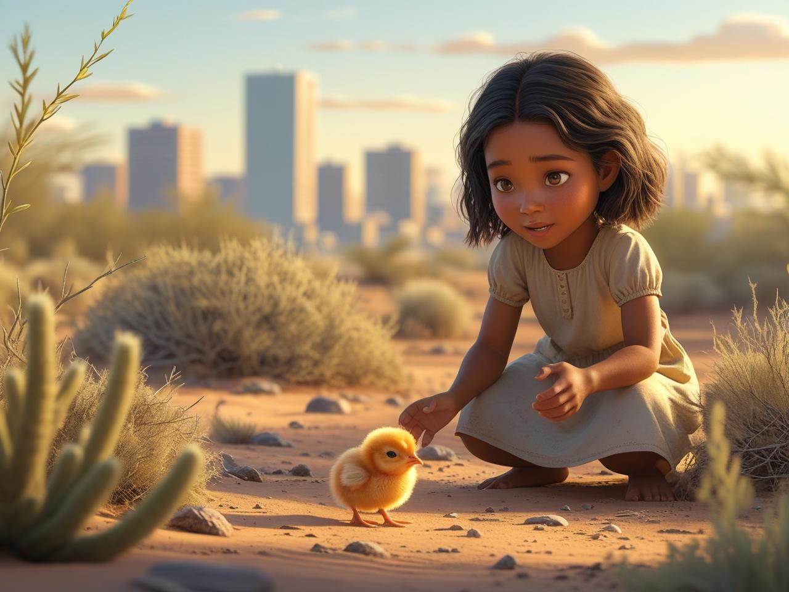

El encuentro

Un día, una niña llamada Clea se encontró al pollito y como estaba escondido, la niña creyó que se lo quería comer un pájaro y para salvarlo se lo llevó a su casa.
Cuando la mamá de la niña lo vió, le dijo que si lo quería, se podía quedar con él y ponerle un nombre.
Cuando la mamá de la niña lo vió, le dijo que si lo quería, se podía quedar con él y ponerle un nombre.
Escuchar cuento